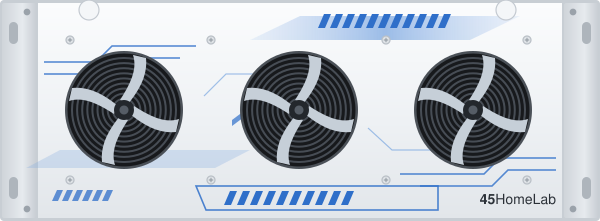
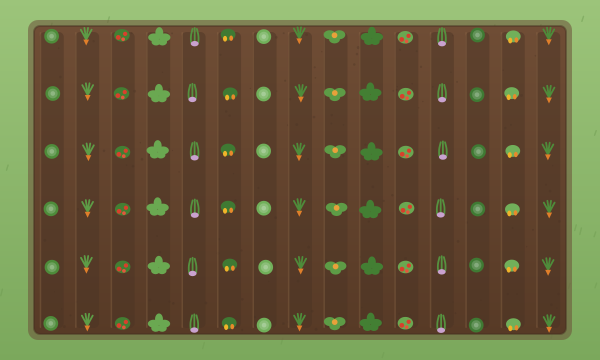
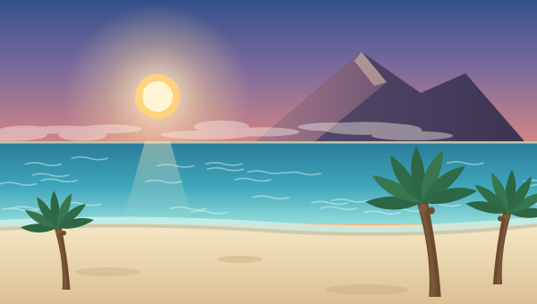

Projects
Homelabbing
Now that I am older and (as my boss would say) have "adult money", I have the computer(s) of
my dreams. I have all the computer hardware my younger self could only fathom. I have a dedicated
server chassis made by 45Drives called the HL15,
and she is a beaut. Filled with server-grade components, it's sure to last me quite a long time. I've ran both fiber and CAT6 cabling within the walls of my home
to some sweet Ubiquiti gear to act as my backbone of the raw power.

Download my deployment path diagram (how this website is served to you)
Gardening
This year my daughter asked to have a garden. Man, did that rekindle a love for gardening that
I had years prior. I made a massive 20'x40' plot, trucked compost in and tilled into the land, laid
out 15 rows. I even ran plumbing to the garden, along with low-voltage wiring to 4 separate solenoid valves,
and bought a nice WiFi controlled water controller. The end result? A garden season where I had 4 invidually
controlled watering zones, where I did not have to go out and bake in the NM sun or get eaten alive by
mosquitios. We are now enjoying the fruits of our (my lol) labor. We are eating our fresh veggies for dinner,
pickling cucumbers, and burning our taste buds from the extra hot Hatch green chile.

Download my Hatch green chile roasting and freezing method
Vacationing
Maybe not a project per se, but I'd argue the planning into each trip is a project on it's own.
My family and I love to vacation. We like travelling to new places, seeing different scenery of this
beautiful Earth, getting a sense of other cultures, and eating delicious food. I think giving my daughter's
life experiences will give them a better understanding and appreciation in their view of the world. Our
most beloved vacation was to Maui, Hawaii in which we had a phenomenal time snorkeling, pineapple picking, sunrise
watching from atop the mountain peak, lounging at the pool, and driving the road to Hana.

Download my “Next Vacation” for your calendar
{kind=link}